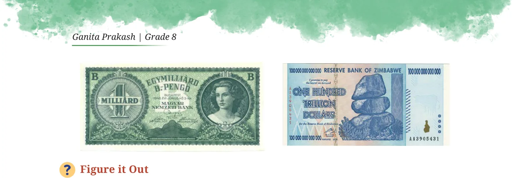

- 1.Find out the units digit in the value of \(2 \div 4\) ? [Hint: \(4 = 2\) ]
- 2.There are 5 bottles in a container. Every day, a new container is
brought in. How many bottles would be there after 40 days?
- 3.Write the given number as the product of two or more powers in
three different ways. The powers can be any integers.
- (i)64 (ii) 192 (iii) 32
\(3 8 - 5\)
- 4.Examine each statement below and find out if it is ‘Always True’,
‘Only Sometimes True’, or ‘Never True’. Explain your reasoning.
- (i)Cube numbers are also square numbers.
- (ii)Fourth powers are also square numbers.
- (iii)The fifth power of a number is divisible by the cube of that
number.
- (iv)The product of two cube numbers is a cube number.
- (v)q is both a 4th power and a 6th power (q is a prime number).
- 5.Simplify and write these in the exponential form.
- (i)\(10 \times 10\) (ii) \(5 \div 5\)
\(- 2 - 5 7 4\)
- (iii)\(9 \div 9\) (iv) (13 )
\(- 7 4 - 2 - 3\)
- (v)m n (mn)
- 6.If \(12 = 144\) what is
- (i)(1.2) (ii) (0.12)
- (iii)(0.012) (iv) 120


- 7.Circle the numbers that are the same -
\(2 \times 3 6 \times 3 6 18 \times 6 6\)
- 8.Identify the greater number in each of the following -
- (i)4 or 3 (ii) 2 or 8 (iii) 100 or 2
- 9.A dairy plans to produce 8.5 billion packets of milk in a year. They
want a unique ID (identifier) code for each packet. If they choose to use the digits \(0 - 9\), how many digits should the code consist of?

- 10.64 is a square number (8 ) and a cube number (4 ). Are there
other numbers that are both squares and cubes? Is there a way to describe such numbers in general?
- 11.A digital locker has an alphanumeric (it can have both digits and
letters) passcode of length 5. Some example codes are G89P0, 38098, BRJKW, and 003AZ. How many such codes are possible?
- 12.The worldwide population of sheep (2024) is about 10 , and that of
goats is also about the same. What is the total population of sheep and goats?
- (ii)20 (ii) 10 (iii) 10
- (iv)10 (v) \(2 \times 10\) (vi) \(10 + 10\)
- 13.Calculate and write the answer in scientific notation:
- (i)If each person in the world had 30 pieces of clothing, find the
total number of pieces of clothing.
- (ii)There are about 100 million bee colonies in the world. Find the
number of honeybees if each colony has about 50,000 bees.
- (iii)The human body has about 38 trillion bacterial cells. Find the
bacterial population residing in all humans in the world.
- (iv)Total time spent eating in a lifetime in seconds.

- 14.What was the date 1 arab/1 billion seconds ago?